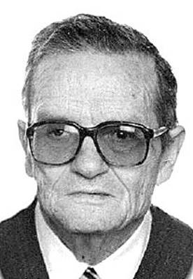

 EL SEÑOR DON JUAN ANGEL MONAGO BAENA Falleció en Laredo, el día 25 de abril de 2008, a los 84 años de edad, habiendo recibido los Santos Sacramentos y la Bendición Apostólica. D. E. P. Su esposa, Lucía Escobedo; hijos, Juan José, Tomás Jesús, María de los Angeles y Paco; hijos políticos, José Antonio Garnica, Paqui Ambrosio y Marta García-Serrano; nietos, Sara y Veñat; hermanos políticos, Angeles Escobedo, Rosario Escobedo, José Luis Escobedo y Marina Escobedo; sobrinos, primos y demás familia, RUEGAN una oración por su alma. El funeral de cuerpo presente por su eterno descanso se celebrará HOY, SABADO, día 26, a las CUATRO de la tarde, en la iglesia parroquial de Santa María del Puerto, de Santoña, siendo a continuación su inhumación en el cementerio de dicha villa. Favores por los cuales les quedarán agradecidos. La misa de alma tendrá lugar MAÑANA, DOMINGO, día 27, a las DOCE Y MEDIA del mediodía en la citada iglesia. Capilla ardiente: Hospital Comarcal de Laredo. Santoña, 26 de abril de 2008. Pésames por internet: www.funerarialamontanesa.com |